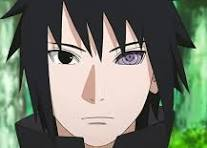
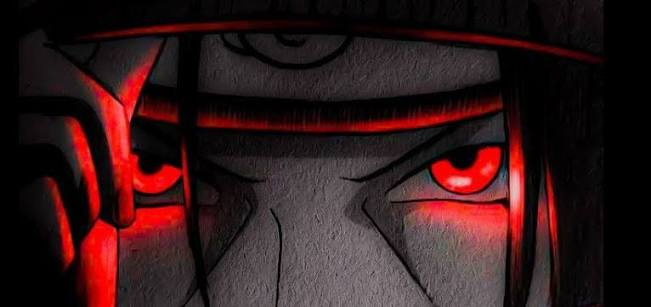
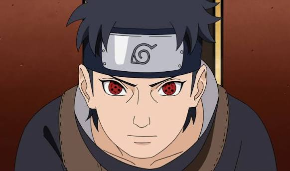

penampilan gambar

di dalam text
salah satu karakter utama dalam serial manga dan anime Naruto karya Masashi Kishimoto.
Kemampuan Utama
• Mata Spesial: Memiliki kekuatan mata Sharingan, Mangekyou Sharingan, hingga
• Teknik Terkenal: Menguasai jurus petir Chidori dan api
• Pelindung: Mampu memanggil raksasa pelindung bernama Susanoo.

di dalam text
kemampuan mata (dojutsu) spesial yang dimiliki oleh Klan Uchiha dalam serial Naruto dan Boruto.
Ciri dan Kemampuan Utama
• Arti Nama: Berarti "Mata Roda Salinan" karena kemampuannya menirukan gerakan dan teknik musuh.
• Cara Aktif: Muncul saat pemiliknya mengalami stres emosional yang kuat atau trauma mendalam.
• Tanda Tomoe: Berkembang dari satu hingga tiga tanda titik hitam (tomoe) di dalam bola mata merah.
• Fungsi Dasar: Bisa melihat aliran chakra, membaca gerak-gerik atau kecepatan lawan, dan menjebak musuh dalam ilusi (genjutsu).
Tingkatan Kekuatan Sharingan
• Sharingan Biasa (Tomoe 1-3): Level awal untuk melacak gerakan dan meniru jurus.
• Mangekyo Sharingan: Evolusi lanjutan akibat kehilangan orang tersayang, memberikan jurus unik seperti Amaterasu atau Kamui, tetapi bisa menyebabkan kebutaan.,
• Eternal Mangekyo Sharingan: Versi sempurna tanpa risiko buta yang didapat dari transplantasi mata kerabat dekat.
• Rinnegan & Rinne Sharingan: Tingkatan tertinggi yang menghubungkan kekuatan dewa dan ilusi skala besar (Mugen Tsukuyomi).

di dalam text
alah satu shinobi paling jenius dan berpengaruh dalam sejarah klan Uchiha di Konohagakure.
fakta menarik
• Arti Nama: Nama Shisui (止水) berarti "air yang tenang", namun kombinasi kanji Shi (死) dan Sui (水) juga bisa diartikan sebagai "kematian air", yang secara akurat meramalkan kematiannya akibat tenggelam.
• Tidak Bisa di-Edo Tensei: Saat Perang Dunia Shinobi Keempat, Kabuto Yakushi tidak bisa membangkitkan Shisui karena jasadnya tenggelam di dasar sungai terdalam dan sampel DNA-nya tidak pernah ditemukan.
• Mewariskan Tekad Api: Shisui adalah pahlawan di balik layar yang memilih mati demi kedamaian desa, sebuah prinsip "Shinobi Bayangan" yang kemudian menginspirasi Itachi dan Sasuke.